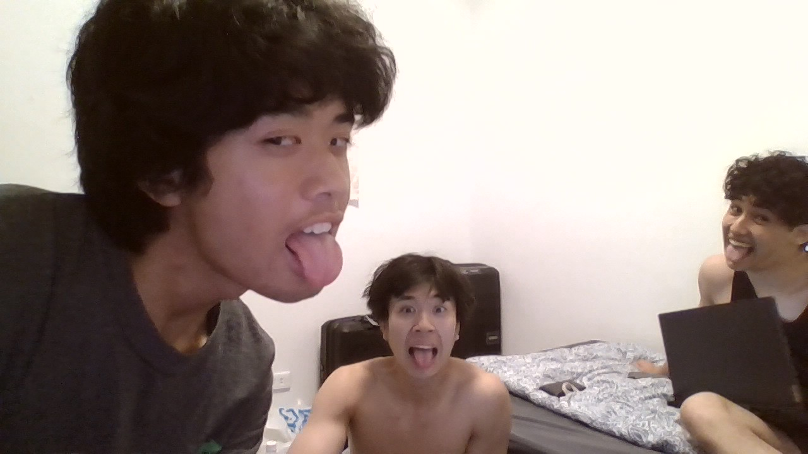

Nederlands Film Festival 2026
Saturday, September 26, 2026
Public screening at Kinepolis Jaarbeurs, Utrecht

Join us for the public screening of Ik ga voor je bidden, a Dutch short film about a silent father-son bond where love is there, but the words are not. I play the lead role of Revo.
Directed and written by Jalu Glissenaar, produced by Jefferson van den Broek, made at the HKU. Selected for the NFF Studentencompetitie 2026.
Premiere: closed premiere, Kinepolis Utrecht
Public screening: 26 September, Kinepolis Jaarbeurs
Talent Awards Ceremonie: 28 September, Stadsschouwburg Utrecht
Jobless
National Taipei University of Technology (NTUT).
Piano, soccer and reading
Visit the festival website
Email me
Call me